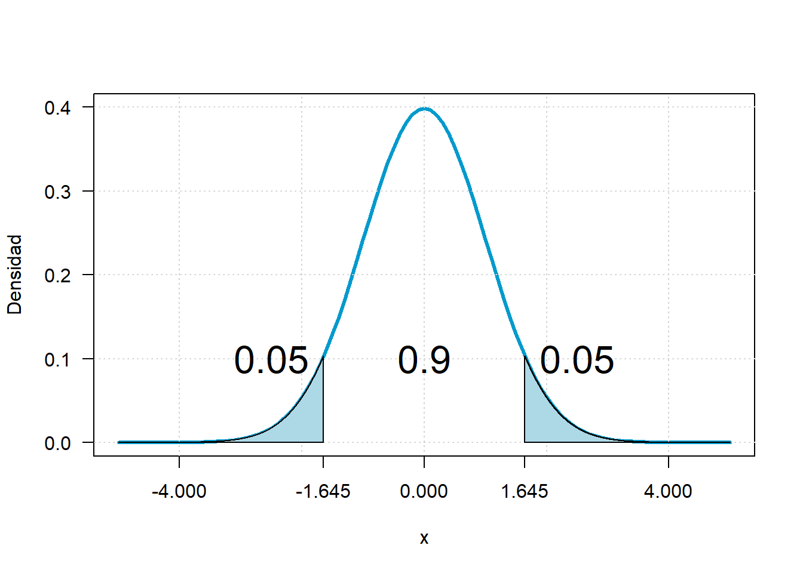

Intervalos de confianza
Taller intervalos de confianza
Estimación por intervalo
Una estimación por intervalo de un parámetro \(\theta\) de la población es un intervalo de la forma:
\[\hat \theta_{inf}<\theta<\hat \theta_{sup}\] Donde los valores estimados dependen del valor estimado de \(\theta\) y de la distribución de muestreo.

Intervalo de confianza
La inferencia estadística consiste en aquellos métodos por medio de los cuales se realizan inferencias o generalizaciones acerca de una población.
Nivel de confianza y de significancia
Nivel de confianza: Probabilidad máxima con la que se asegura que un parámetro a estimar se encuentra dentro de un intervalo estimado.
Nivel de significancia: Máximo error que se comete en la estimación usualmente se denota como \(\alpha\).
\[\huge NC+\alpha=1\] Si se construyen 100 intervalos de la forma \(\hat \theta_{inf}<\theta<\hat \theta_{sup}\) con un NC=0.97 entonces se espera que 97 de los 100 intervalos contengan el parámetro \(\theta\)

Intervalo de confianza para una muestra
IC para la media
library(DiagrammeR)
DiagrammeR("graph TB;
A{sigma conocida}-->|Si| C[Normal]
A-->|No| B{n mayor q 30}
B-->|No| D[t student]
B-->|Si| C
")con la varianza conocida
Si \(\bar x\) es la media de una muestra aleatoria de tamaño 𝑛 de una población normal con varianza \(\sigma^2\) conocida, un intervalo de confianza del 1 − 𝛼 100% para 𝜇 está dado por:
\[\huge \bar x-Z_{\alpha/2} \frac{\sigma}{\sqrt n} \leq \mu \leq \bar x+Z_{\alpha/2} \frac{\sigma}{\sqrt n}\]
donde \(Z_{\alpha/2}\) es el valor z que deja un área de 𝛼/2 a la derecha.
Ejemplo Una muestra aleatoria de 110 relámpagos dieron por resultado una duración de eco de radar promedio muestral de 0.81 segundos y una desviación estándar de 0.34 segundos. Calcule un intervalo de confianza de 95% para la duración de eco promedio e interprete el intervalo resultante
library(BSDA)## Loading required package: lattice##
## Attaching package: 'BSDA'## The following object is masked from 'package:datasets':
##
## Orangezsum.test(mean.x=0.81,sigma.x=0.34, n.x=110,conf.level=0.95)##
## One-sample z-Test
##
## data: Summarized x
## z = 24.986, p-value < 2.2e-16
## alternative hypothesis: true mean is not equal to 0
## 95 percent confidence interval:
## 0.7464624 0.8735376
## sample estimates:
## mean of x
## 0.81Intervalo de confianza para la media con varianza conocida
con la varianza desconocida
Si \(\bar x\) es la media de una muestra aleatoria de tamaño 𝑛 de una población normal con varianza \(\sigma^2\) desconocida, un intervalo de confianza del 1 − 𝛼 100% para 𝜇 está dado por:
\[\huge \bar x-t_{\alpha/2} \frac{s}{\sqrt n} \leq \mu \leq \bar x+t_{\alpha/2} \frac{s}{\sqrt n}\]
donde \(Z_{\alpha/2}\) es el valor z que deja un área de 𝛼/2 a la derecha.
Ejemplo Se tienen los datos de las horas de ejercicio que hacen 10 adolescentes por semana, calcule un intervalo de confianza para el tiempo promedio con un NC del 90%
library(carData)##
## Attaching package: 'carData'## The following objects are masked from 'package:BSDA':
##
## Vocab, WoolcarData::Blackmore$exercise[1:10]## [1] 2.71 1.94 2.36 1.54 8.63 0.14 0.14 0.00 0.00 5.08x=carData::Blackmore$exercise[1:10]
t.test(x=x,conf.level = 0.9)##
## One Sample t-test
##
## data: x
## t = 2.5824, df = 9, p-value = 0.02958
## alternative hypothesis: true mean is not equal to 0
## 90 percent confidence interval:
## 0.6539884 3.8540116
## sample estimates:
## mean of x
## 2.254IC para la proporción
Si \(\hat p\) es la proporción de éxitos en una muestra aleatoria de tamaño 𝑛, un intervalo de confianza aproximado de (1−𝛼) 100% para 𝑝 está dado por
\[\huge \hat p-Z_{\alpha/2} \sqrt{\frac{\hat p(1-\hat p)}{n}}\leq p \leq \hat p+Z_{\alpha/2} \sqrt{\frac{\hat p(1-\hat p)}{n}} \]
donde \(𝑍_{𝛼/2}\) es el valor z que deja un área de 𝛼/2 a la derecha. Nota: usar solo cuando 𝑛𝑝≥50 y 𝑛(1 −𝑝)≥50
EJEMPLO Se seleccionó una muestra de 487 mujeres no fumadoras de peso normal (que había dado a luz). 7.2% de estos nacimientos dieron por resultado niños con bajo peso al nacer (menos de 2500 g). Calcule un intervalo de confianza con un nivel de confianza del 93% para la proporción de todos esos nacimientos que dieron por resultado niños de bajo peso al nacer.
prop.test(x=72,n=1000,conf.level=0.93)##
## 1-sample proportions test with continuity correction
##
## data: 72 out of 1000, null probability 0.5
## X-squared = 731.02, df = 1, p-value < 2.2e-16
## alternative hypothesis: true p is not equal to 0.5
## 93 percent confidence interval:
## 0.05809659 0.08879847
## sample estimates:
## p
## 0.072Intervalo de confianza para la proporción
IC para la varianza
Si \(𝑠^2\) es la varianza de una muestra aleatoria de tamaño 𝑛 de una población normal, un intervalo de confianza aproximado de (1−𝛼) 100% para \(𝜎^2\) está dado por
\[\huge \frac {(n−1)𝑠^2}{\chi^2_{ \frac {𝛼} {2},𝑛−1} } <𝜎^2<\frac {(n−1)𝑠^2}{\chi^2_{1- \frac {𝛼} {2},𝑛−1} }\]
donde los denominadores son obtenidos de una chi-cuadrada. Nota: un intervalo de confianza para 𝜎 se puede obtener tomando raíz cuadrada en los límites del intervalo anterior.
Ejemplo Se tienen los datos de las horas de ejercicio que hacen 10 adolescentes por semana, calcule un intervalo de confianza para la varianza del tiempo con un NC del 98%.
library(EnvStats)##
## Attaching package: 'EnvStats'## The following objects are masked from 'package:stats':
##
## predict, predict.lmlibrary(carData)
carData::Blackmore$exercise[1:10]## [1] 2.71 1.94 2.36 1.54 8.63 0.14 0.14 0.00 0.00 5.08x=carData::Blackmore$exercise[1:10]
varTest(x, conf.level=0.95)##
## Results of Hypothesis Test
## --------------------------
##
## Null Hypothesis: variance = 1
##
## Alternative Hypothesis: True variance is not equal to 1
##
## Test Name: Chi-Squared Test on Variance
##
## Estimated Parameter(s): variance = 7.618471
##
## Data: x
##
## Test Statistic: Chi-Squared = 68.56624
##
## Test Statistic Parameter: df = 9
##
## P-value: 5.813905e-11
##
## 95% Confidence Interval: LCL = 3.60443
## UCL = 25.39124Intervalo de confianza para la varianza
Intervalos de confianza para dos muestras
Intervalo de confianza para la diferencia de medias con varianzas iguales
Intervalo de confianza para la diferencia de medias con varianzas desconocidas y diferentes
Intervalo de confianza para la razón de varianzas
Intervalo de confianza para la diferencia de proporciones
Intervalo de confianza para la diferencia de medias pareadas